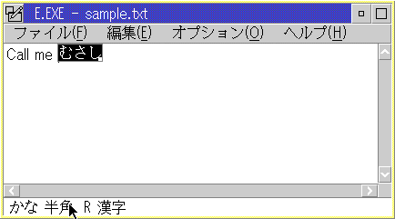
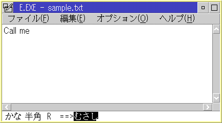
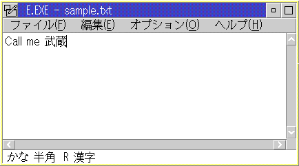

┌──────────────────────────────────────────────────────────────────────┐ │Add an FCF_DBE_APPSTAT flag to an application window to create a │ │DBCS-unique status bar for inputting DBCS and to show a keyboard shift│ │status to users. │ └──────────────────────────────────────────────────────────────────────┘
On many operating systems supporting DBCS languages, user inputs DBCS via IME (Input Method Editor). For example, a Japanese user inputs phonetic sound of Kanji with alphabet keys and converts it to Kanji characters. To show the intermediate result of the conversion, OS/2 needs to create a special information area.
FCF_DBE_APPSTAT is a PM frame creation flag to add a DBCS-unique status line. Because DBCS OS/2 has a variety of keyboard statuses, every window asking a user to enter characters from a keyboard should have this frame control so that the user does not get lost with the keyboard-shift status.
Note:
┌──────────────────────────────────────────────────────────────────────┐│The area showing the intermediate results can be located either │ │on-the-spot or fixed-position │ └──────────────────────────────────────────────────────────────────────┘If the area is created at the current cursor position, this is called an on-the-spot conversion. If the area is created next to the keyboard status area, which is located at the bottom of a client window, it is called a fixed-position conversion. The on-the-spot conversion is preferred to the fixed-line conversion, because the user does not need to move his/her eyes to the bottom of a client window.
On-The-Spot conversion (Intermediate result) shows how the on-the-spot conversion
is performed in a PM window. A user inputs a word using its pronunciation
into a small window opened at the current cursor position, window whose
back ground color is black. An intermediate result of Kana-to-Kanji conversion
is displayed at the small window each time the user presses the conversion
key.
On-The-Spot conversion (Intermediate result)

Fixed-Position conversion (Intermediate result) shows the fixed-position
conversion. Notice the intermediate result is shown at the bottom of the
window, which we called the status line.
Fixed-Position conversion (Intermediate result)

In either case, DBCS characters are put into the application window after
the user pushes the enter key (Conversion result).
Conversion result
